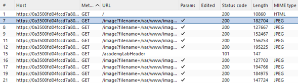
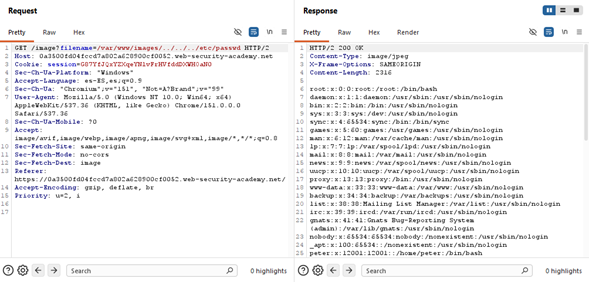
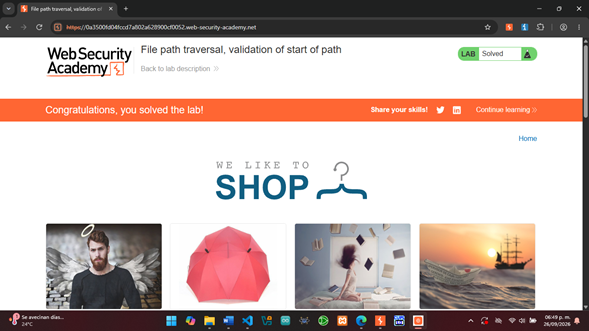

Laboratorio 05
File Path Traversal — Validation of Start of Path
Explotación controlada de una vulnerabilidad File Path Traversal mediante la evasión de una validación aplicada únicamente al inicio de la ruta proporcionada por el usuario.
Objetivo
Identificar y explotar de manera controlada una vulnerabilidad
de File Path Traversal presente en la carga de imágenes de
una aplicación web. Mediante Burp Suite, se analizó y modificó una
petición HTTP para manipular el parámetro filename.
Debido a que la aplicación valida que la ruta proporcionada comience
con /var/www/images/, se conservó dicho prefijo y se añadieron
posteriormente secuencias de recorrido de directorios para acceder
al archivo /etc/passwd.
Desarrollo
El laboratorio se realizó en PortSwigger Web Security Academy
utilizando Burp Suite Community Edition. Desde el navegador
integrado de Burp Suite se accedió a la instancia del laboratorio y
se analizaron las peticiones HTTP generadas por la aplicación.
En Proxy > HTTP history se identificó que las imágenes de
los productos eran solicitadas mediante peticiones GET al
endpoint /image, utilizando el parámetro filename
para especificar el archivo que debía recuperar el servidor.
A diferencia de los laboratorios anteriores, se observó que el
parámetro contenía una ruta absoluta que comenzaba con el directorio
utilizado por la aplicación para almacenar las imágenes. Por ejemplo:
/var/www/images/43.jpg

Análisis de la petición con Repeater
La petición seleccionada se envió al módulo Repeater,
permitiendo modificar manualmente sus parámetros y reenviarla
al servidor para analizar los cambios producidos en la respuesta.
En este laboratorio, la aplicación implementaba una validación
sobre el inicio de la ruta proporcionada mediante el parámetro
filename. Para que una solicitud fuera aceptada, la ruta
debía comenzar con:
/var/www/images/
Sin embargo, la aplicación no comprobaba adecuadamente que la
ruta resultante permaneciera dentro de ese directorio después
de resolver las secuencias de recorrido.
Bypass de la validación del inicio de la ruta
Para conservar el prefijo requerido por la aplicación y al mismo
tiempo abandonar el directorio autorizado, se sustituyó el valor
original del parámetro filename por el siguiente payload:
/var/www/images/../../../etc/passwd
La cadena continúa comenzando con /var/www/images/, por
lo que cumple con la validación aplicada al inicio de la ruta.
Sin embargo, las tres secuencias ../ permiten retroceder
progresivamente dentro de la estructura de directorios.
Partiendo de /var/www/images/, la primera secuencia permite
regresar a /var/www/, la segunda a /var/ y la tercera
a la raíz del sistema. A partir de esta ubicación, la parte
etc/passwd permite alcanzar el archivo /etc/passwd.

Después de enviar la petición modificada, el servidor respondió
con HTTP/2 200 OK y devolvió en el cuerpo de la respuesta
información correspondiente al archivo /etc/passwd.
La recuperación del archivo confirmó que comprobar únicamente
el inicio de la ruta no era suficiente para restringir el acceso
al directorio autorizado. Aunque el valor comenzaba con el prefijo
esperado, las secuencias de recorrido modificaron la ubicación
final del recurso solicitado.
Confirmación del laboratorio
Finalmente, PortSwigger Web Security Academy reconoció la recuperación correcta del archivo solicitado y marcó el laboratorio como Solved, confirmando que el objetivo de la práctica había sido completado satisfactoriamente.

Resultados
Se explotó exitosamente una vulnerabilidad de
File Path Traversal presente en el mecanismo de carga de
imágenes de la aplicación.
Mediante la modificación del parámetro filename con el
payload /var/www/images/../../../etc/passwd, se comprobó
que la validación aplicada únicamente al inicio de la ruta podía
ser evadida conservando el prefijo requerido e incorporando
posteriormente secuencias de recorrido.
El servidor respondió con HTTP/2 200 OK y mostró el
contenido del archivo /etc/passwd, demostrando que la
ubicación final del recurso no estaba siendo validada
adecuadamente. Finalmente, PortSwigger Web Security Academy
validó la explotación y marcó el laboratorio como Solved.
Conclusión
El laboratorio permitió comprender que comprobar únicamente que
una ruta comience con un directorio autorizado no garantiza que
el recurso final permanezca dentro de dicha ubicación.
Mediante Burp Suite fue posible identificar el parámetro
filename, observar el prefijo requerido
/var/www/images/ y conservarlo mientras se incorporaban
secuencias ../ para modificar la ubicación final de la ruta.
La recuperación de /etc/passwd demostró la importancia de
validar la ruta final después de resolver todos sus componentes,
en lugar de confiar únicamente en una comparación textual del
inicio de la cadena.
La actividad también permitió reforzar el uso de
HTTP History y Repeater para analizar, modificar
y comprobar el comportamiento de peticiones HTTP durante
pruebas controladas de seguridad web.